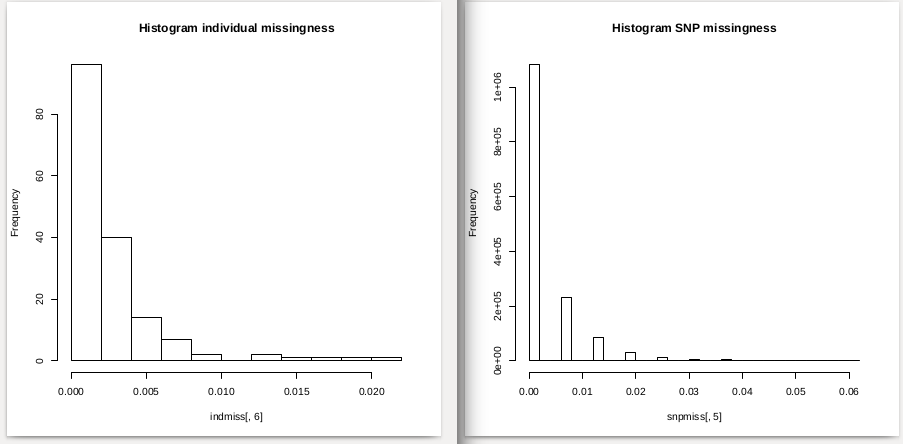
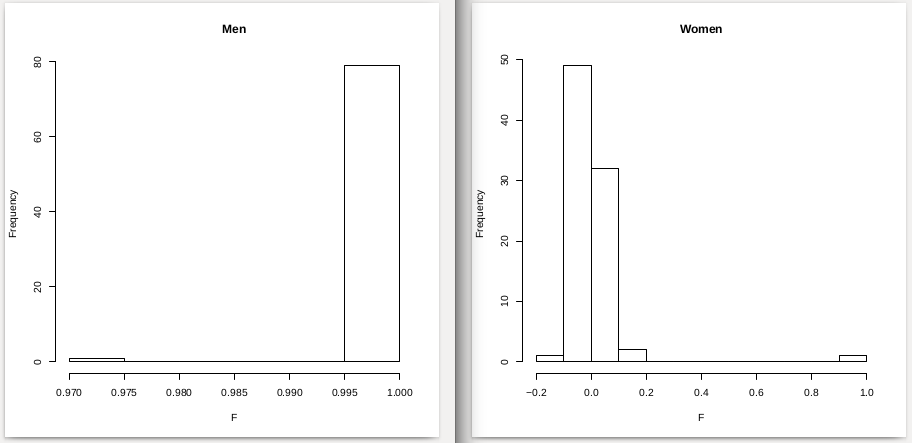
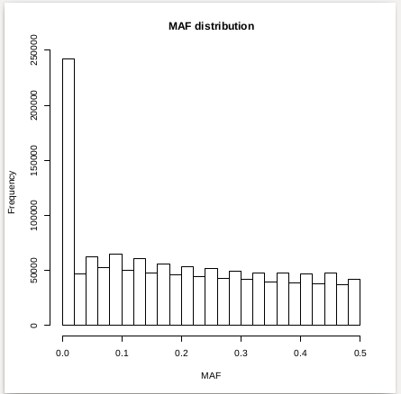
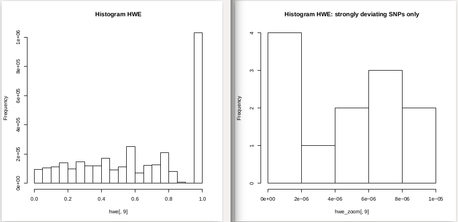
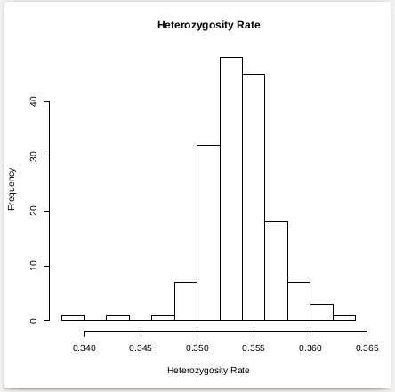
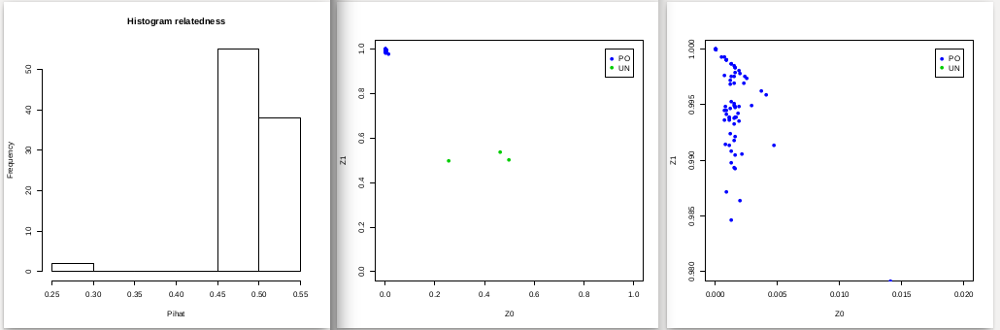
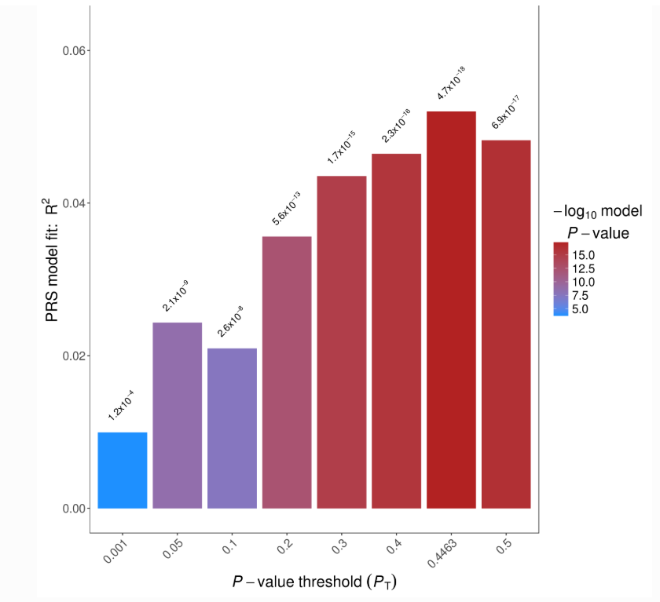
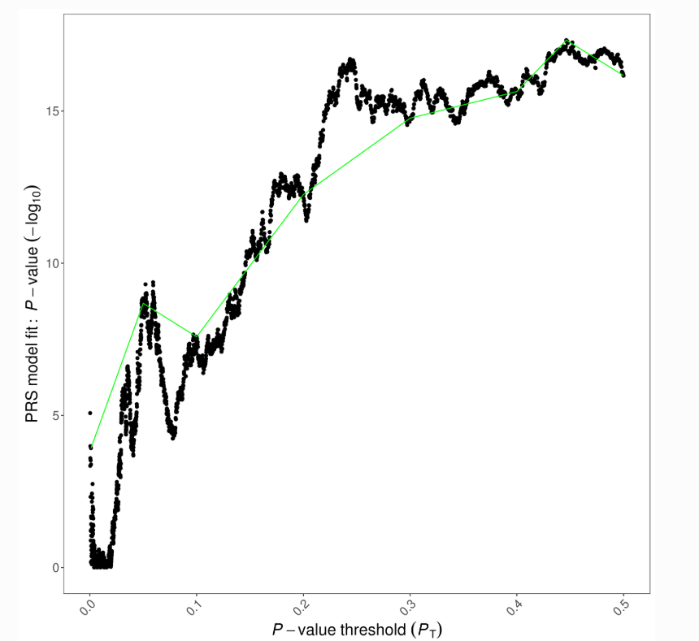

简要介绍
抽了些时间走了一遍Human GWAS流程，主要包括以下几个步骤：
- GWAS QC steps along with data visualization.
- Dealing with population stratification, using 1000 genomes as a reference.
- Association analyses of GWAS data.
- Polygenic risk score (PRS) analyses.
In genetics, a genome-wide association study (GWA study, or GWAS), also known as whole genome association study (WGA study, or WGAS), is an observational study of a genome-wide set of genetic variants in different individuals to see if any variant is associated with a trait.
前期准备
- Linux computer
- open-source programming language R
1 | sudo apt install r-base |
- open-source whole genome association analysis toolset PLINK version 1.07
但是之前说了这个操作系统依旧是白纸，所以以下
1 | sudo apt-get install python |
自然可以安装Python3，Ubuntu默认安装Python2，现在诸多apps依旧基于Python2，接下来装Tkinter
1 | sudo apt-get install python-tk |
安装setuptools
1 | sudo apt-get install python-setuptools |
安装plink
1 | sudo python -m easy_install -f http://math.uic.edu/t3m/plink plink |
也许是由于我的系统是刚装的少了些配置抑或是某些原因，我最后是在官网上直接下了一个并放到当前路径下操作的，环境还没配置好我没有加入环境变量，所以我后面用plink命令时实际均为./plink，但是我在代码里面依旧用plink
好了，那下面就开始GWAS流程啦！
GWAS
Step1: GWAS QC steps along with data visualization
1: Investigate missingness per individual and per SNP and make histograms
下载测试数据freely available HapMap data: hapmap3_r3_b36_fwd.consensus.qc.：http://hapmap.ncbi.nlm.nih.gov/downloads/genotypes/2010-05_phaseIII/plink_format/
- 计算样本缺失率和位点缺失率
1 | plink --bfile HapMap_3_r3_1 --missing |
生成plink.imiss 和 plink.lmiss 两个文件，分别存储了the proportion of missing SNPs per individual 和 the proportion of missing individuals per SNP.
- 用R将缺失结果可视化
1 | indmiss<-read.table(file="plink.imiss", header=TRUE) |

- 删除高缺失的SNPs and individuals
Delete SNPs with missingness >0.2.
1 | plink --bfile HapMap_3_r3_1 --geno 0.2 --make-bed --out HapMap_3_r3_2 |
Delete individuals with missingness >0.2.
1 | plink --bfile HapMap_3_r3_2 --mind 0.2 --make-bed --out HapMap_3_r3_3 |
事实上由上图表可见我们将阈值定在0.2在这个数据集中不会删除任何SNPs or individuals. 但是作为练习我们可以先从不那么严格的阈值开始质控XD
1 | # Delete SNPs with missingness >0.02. |
2: Check for sex discrepancy
先验确定为女性的受试者的F值必须<0.2，先验确定为男性的受试者的F值必须> 0.8。 该F值基于X染色体近交（纯合）估计。不满足这些要求的主题会被PLINK标记为“问题”。
1 | plink --bfile HapMap_3_r3_5 --check-sex |
生成plink.sexcheck
- 可视化sex-check results
1 | gender <- read.table("plink.sexcheck", header=T,as.is=T) |

检查发现有一位女性有问题，F值偏离正常范围
- Delete individuals with sex discrepancy.
1 | grep "PROBLEM" plink.sexcheck| awk '{print$1,$2}'> sex_discrepancy.txt |
3: Generate a bfile with autosomal(常染色体) SNPs only and delete SNPs with a low minor allele frequency(次要等位基因频率) (MAF)
- 仅选择常染色体SNP（即从1号到22号染色体）
1 | awk '{ if ($1 >= 1 && $1 <= 22) print $2 }' HapMap_3_r3_6.bim > snp_1_22.txt |
- 生成MAF分布图
1 | maf_freq <- read.table("MAF_check.frq", header =TRUE, as.is=T) |

- 去除MAF频率低的SNP
1 | plink --bfile HapMap_3_r3_7 --maf 0.05 --make-bed --out HapMap_3_r3_8 |
After frequency and genotyping pruning, there are 1073226 SNPs
4: Delete SNPs which are not in Hardy-Weinberg equilibrium (HWE) & Check the distribution of HWE p-values of all SNPs.
1 | plink --bfile HapMap_3_r3_8 --hardy |
- 选择HWE p值低于0.00001的SNP，可以放大严重偏离的SNP
1 | awk '{ if ($9 <0.00001) print $0 }' plink.hwe>plinkzoomhwe.hwe |
1 | hwe<-read.table (file="plink.hwe", header=TRUE) |

默认情况下，plink中的–hwe选项仅过滤control。因此，我们使用两个步骤，首先对control使用严格的HWE阈值，然后对案例数据使用较不严格的阈值。
1 | plink --bfile HapMap_3_r3_8 --hwe 1e-6 --make-bed --out HapMap_hwe_filter_step1 |
案例的HWE阈值仅过滤掉与HWE极为偏离的SNP。第二个HWE步骤仅关注案例，因为在control中，所有HWE p值<hwe 1e-6的SNP已被删除
1 | plink --bfile HapMap_hwe_filter_step1 --hwe 1e-10 --hwe-all --make-bed --out HapMap_3_r3_9 |
5: Generate a plot of the distribution of the heterozygosity rate(杂合率分布的图) of your subjects & remove individuals with a heterozygosity rate deviating more than 3 sd from the mean
对一组高度不相关的SNP执行杂合性检查。
因此，要生成（高度）不相关相关的SNP的列表，我们排除高反转区域（inversion.txt [高LD区域]），并使用–indep-pairwise命令修剪SNP.
参数50 5 0.2分别代表：窗口大小，每一步移动窗口的SNP数量以及同时在所有其他SNP上回归的SNP的多重相关系数。
1 | plink --bfile HapMap_3_r3_9 --exclude inversion.txt --range --indep-pairwise 50 5 0.2 --out indepSNP |
R_check包含修剪的数据集
- 绘制杂合率分布图
1 | het <- read.table("R_check.het", head=TRUE) |

以下代码生成了一个列表存储在fail-het-qc.txt，这些列表与杂合率均值的偏差超过3个标准差
1 | het <- read.table("R_check.het", head=TRUE) |
当使用我们的示例数据/ HapMap数据时，此列表包含2个个体（两个个体的杂合率偏离均值超过3个SD）。通过从文件中删除所有引号并仅选择前两列，使该文件与PLINK兼容。
1 | sed 's/"// g' fail-het-qc.txt | awk '{print$1, $2}'> het_fail_ind.txt |
- 删除杂合率异常值
1 | plink --bfile HapMap_3_r3_9 --remove het_fail_ind.txt --make-bed --out HapMap_3_r3_10 |
6: Analyse cryptic relatedness
假设随机样本，我们将排除pihat阈值高于0.2的所有个体
- 检查pihat> 0.2的个人之间的关系
1 | plink --bfile HapMap_3_r3_10 --extract indepSNP.prune.in --genome --min 0.2 --out pihat_min0.2 |
- 已知HapMap数据集包含父子关系，以下命令将使用z值专门显示这些父子关系。
1 | awk '{ if ($8 >0.9) print $0 }' pihat_min0.2.genome>zoom_pihat.genome |
- 生成图以评估关系类型
1 | relatedness = read.table("pihat_min0.2.genome", header=T) |

生成的图表明Hapmap数据中显示了大量的相关个体（PO =亲子后代，UN =不相关的个体），这符合数据集的构造。
通常应使用特定的基于家庭的方法来分析基于家庭的数据。 这里我们将随机总体样本中的相关性视为隐秘的相关性，并旨在从数据集中删除所有“关联性”。为了证明大多数相关性是由于父母后代所致，我们仅包括创始人（数据集中没有父母的个人）。
1 | plink --bfile HapMap_3_r3_10 --filter-founders --make-bed --out HapMap_3_r3_11 |
- 现在，我们将再次寻找pihat> 0.2的个体
1 | plink --bfile HapMap_3_r3_11 --extract indepSNP.prune.in --genome --min 0.2 --out pihat_min0.2_in_founders |
文件’pihat_min0.2_in_founders.genome’显示，在排除所有非创始人之后，HapMap数据中仅剩下1个pihat大于0.2的个人对。根据Z值，这可能是完整的同胞或DZ双胞胎对。 值得注意的是，他们在HapMap数据中没有获得相同的家庭身份（FID）。
- 对于pihat> 0.2的每对“相关”个体，我们建议删除the lowest call rate个体
1 | plink --bfile HapMap_3_r3_11 --missing |
使用UNIX文本编辑器（例如vi（m））检查“相关对”中哪个call rate最高。
生成Pihat大于0.2的个人的FID和IID列表，以检查哪个call rate较低。
数据集中，个体13291 NA07045的call rate较低。
如下操作
1 | vi 0.2_low_call_rate_pihat.txt |
如果有多个“相关”对，可以使用与单独的“相关”对相同的方法扩展上面生成的列表。
- 删除该个体
1 | plink --bfile HapMap_3_r3_11 --remove 0.2_low_call_rate_pihat.txt --make-bed --out HapMap_3_r3_12 |
至此， I have conducted a proper genetic QC yeah!
下一步将需要在质控阶段生成的这些文件
- The bfile HapMap_3_r3_12 (i.e., HapMap_3_r3_12.fam,HapMap_3_r3_12.bed, and HapMap_3_r3_12.bim
- indepSNP.prune.in
Dealing with population stratification（人口分层）
Step1末尾生成的bfile（HapMap_3_r3_12）使用1000个基因组计划中的数据进行种群分层检查。 具有非欧洲种族背景的个人将被删除。此外将生成一个协变量文件，以帮助调整欧洲受试者中剩余的人口分层。
这里我就理论上过一遍了，1000个基因组(>60 gigabyte)我的小电脑和学校这个网络哪里顶得住哟，我又不是在服务器上做的……
1: Download 1000 Genomes data
1 | wget ftp://ftp-trace.ncbi.nih.gov/1000genomes/ftp/release/20100804/ALL.2of4intersection.20100804.genotypes.vcf.gz |
- 将vcf转换为Plink格式
1 | plink --vcf ALL.2of4intersection.20100804.genotypes.vcf.gz --make-bed --out ALL.2of4intersection.20100804.genotypes |
文件“ ALL.2of4intersection.20100804.genotypes.bim”包含不带rs标识符的SNP，这些SNP用.表示。
- 查看此文件
1 | zmore ALL.2of4intersection.20100804.genotypes.vcf.gz |
为了便于实践将为缺少rs-identifier的SNP分配唯一的标识符
1 | plink --bfile ALL.2of4intersection.20100804.genotypes --set-missing-var-ids @:#[b37]\$1,\$2 --make-bed --out ALL.2of4intersection.20100804.genotypes_no_missing_IDs |
2: QC on 1000 Genomes data
1 | # Remove variants based on missing genotype data. |
1 | # Remove variants based on MAF. |
- 数据集必须具有相同build，更改1000 Genomes数据build
1 | awk '{print$2,$4}' HapMap_MDS.map > buildhapmap.txt |
buildhapmap.txt每行包含一个SNP-id和物理位置
1 | plink --bfile 1kG_MDS6 --update-map buildhapmap.txt --make-bed --out 1kG_MDS7 |
3: Merge the HapMap and 1000 Genomes data sets
在将1000个基因组数据与HapMap数据合并之前，我们要确保文件可合并，为此，我们执行3个步骤：
1）确保参考基因组在HapMap和1000个基因组计划数据集中相似。
2）解决链问题。
3）删除在前两个步骤之后数据集仍然不同的SNP。
主要完成的事情是比较两个数据集并确保它们对应
- set reference genome
1 | awk '{print$2,$5}' 1kG_MDS7.bim > 1kg_ref-list.txt |
- Resolve strand issues
1 | # Check for potential strand issues. |
翻转SNP以解决链问题，打印SNP标识符并删除重复项。
1 | awk '{print$1}' all_differences.txt | sort -u > flip_list.txt |
生成812个SNP的文件， 这些是两个文件之间不对应的SNP，翻转812个非对应的SNP。
1 | plink --bfile HapMap-adj --flip flip_list.txt --reference-allele 1kg_ref-list.txt --make-bed --out corrected_hapmap |
翻转后，检查仍然有问题的SNP。
1 | awk '{print$2,$5,$6}' corrected_hapmap.bim > corrected_hapmap_tmp |
- Remove problematic SNPs from HapMap and 1000 Genomes
1 | awk '{print$1}' uncorresponding_SNPs.txt | sort -u > SNPs_for_exlusion.txt |
- 对由1000个基因组数据锚定的HapMap-CEU数据执行多维标度分析（multidimensional scaling ,MDS）
1 | # Using a set of pruned SNPs |
MDS-plot
- 下载包含1000个基因组数据集的种群信息的文件
1 | wget ftp://ftp.1000genomes.ebi.ac.uk/vol1/ftp/release/20100804/20100804.ALL.panel |
- 将人口代码转换为超级人口代码（即AFR，AMR，ASN和EUR）
1 | awk '{print$1,$1,$2}' 20100804.ALL.panel > race_1kG.txt |
- 创建数据的racefile
1 | awk '{print$1,$2,"OWN"}' HapMap_MDS.fam>racefile_own.txt |
- Concatenate racefiles
1 | cat race_1kG14.txt racefile_own.txt | sed -e '1i\FID IID race' > racefile.txt |
- 生成人口分层图
1 | data<- read.table(file="MDS_merge2.mds",header=TRUE) |
- 排除种族离群值
在HapMap数据中选择低于临界值的个人。 截止水平不是固定的阈值，而是必须根据前两个维度的可视化确定。 为了排除种族离群值，需要围绕感兴趣的人群设置阈值。
1 | awk '{ if ($4 <-0.04 && $5 >0.03) print $1,$2 }' MDS_merge2.mds > EUR_MDS_merge2 |
在HapMap数据中提取这些人
1 | plink --bfile HapMap_3_r3_12 --keep EUR_MDS_merge2 --make-bed --out HapMap_3_r3_13 |
- 根据MDS创建协变量
1 | plink --bfile HapMap_3_r3_13 --extract indepSNP.prune.in --genome --out HapMap_3_r3_13 |
covar_mds.txt中的值将用作协变量，以针对剩余的种群分层进行调整，接下来将进行全基因组关联分析。
需要用到的文件
- HapMap_3_r3_13 (the bfile, i.e., HapMap_3_r3_13.bed,HapMap_3_r3_13.bim,and HapMap_3_r3_13.fam
- covar_mds.txt
Step3: Association analyses of GWAS data
Assoc
1 |
|
注意-assoc选项不允许校正协变量，例如主成分（PC）/ MDS成分，这使其不太适合进行关联分析。
我们将使用10个主成分作为协变量进行logistic analysis
1 | plink --bfile HapMap_3_r3_13 --covar covar_mds.txt --logistic --hide-covar --out logistic_results |
注意使用选项-hide-covar仅显示输出文件中SNP的加法结果。
删除NA值，这些值可能会在以后的步骤中生成图时出现问题。
1 | awk '!/'NA'/' logistic_results.assoc.logistic > logistic_results.assoc_2.logistic |
从这些GWAS分析获得的结果将在最后一步中可视化，这还将显示该数据集是否包含任何全基因组范围内的重要SNP。
注意如果采用定量结果度量，则应将选项–logistic替换为–linear。 对于定量结果度量，也可以使用–assoc选项（如前所述，该选项不允许使用协变量）。
Multiple testing
在传统的全基因组范围内的重要意义阈值5.0E-8之外，方法很多。
1 | #adjust |
Generate Manhattan and QQ plots
1 | install.packages("qqman",repos="http://cran.cnr.berkeley.edu/",lib="~" ) # location of installation can be changed but has to correspond with the library location |
1 | install.packages("qqman",repos="http://cran.cnr.berkeley.edu/",lib="~" ) # location of installation can be changed but has to correspond with the library location |
Step4: Polygenic risk score (PRS) analyses
- 使用PRSice执行简单的多基因风险评分分析
进入http://prsice.info
同样在网站中找到对应linux系统的下载地址然后右键复制链接地址进行wget
1 | wget https://github.com/choishingwan/PRSice/releases/download/2.2.11/PRSice_linux.nightly.zip |
解压康康有哪些文件
1 | sisi@sisi-VirtualBox:~/Desktop/plink1$ unzip PRSice_linux.nightly.zip |
安装必需的包
1 | Rscript -e 'install.packages(c("batch","fmsb","gtx", "plyr", "ggplot2"),repos="http://cran.rstudio.com/")' |
emmm安装失败了报错为lib is not writable
解决方案：键入以下命令to add yourself to the group called staff
1 | sudo usermod -a -G staff sisi |
重新执行安装包的代码，done
Rscript PRSice.R [options] -b TOY_BASE_GWAS.assoc -t TOY_TARGET_DATA –prsice ./
下进行多基因风险评分(PRS)分析可参照http://www.prsice.info/step_by_step/
- 图表解释
第一幅图显示了基于SNP的模型目标样本中p值低于基本样本中特定阈值的预测值。 另外对于每个模型相应的原假设提供p值。 如图S1所示，使用p值高达0.45的SNP的模型在p值为的目标样本中实现了最高的预测值。 但是，与多样本样本的多基因风险评分分析相比，预测值通常相对较低（Nagelkerke约为5％）。 文本文件包含每个p值阈值的确切值。

第二幅图显示了许多不同的p值阈值，黑色的预测效果（$R^2$）的p值以及绿色的汇总趋势线。

这里面具体怎么算的我没时间仔细研究了……以后再说吧……
参见 http://www.prsice.info/step_by_step/#output-of-results
reference: https://www.ncbi.nlm.nih.gov/pubmed/29484742